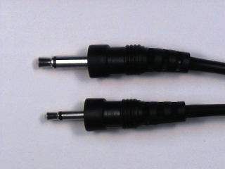

Experiment 2.2
Electroacoustic Transducers
Components
- Loudspeaker
- Microphone
Part A: Listening to a Signal
-
Set up the function generator to produce a 1kHz sine wave with a peak to peak (p-p) amplitude of 5 volts.
-
Using the BNC clip leads, connect the output of the function generator to the speaker. What do you hear?
-
With the speaker still connected to the FGEN, measure the peak-to-peak voltage across the speaker. This time, connect an oscilloscope probe to one of the speaker leads. (The ground lead can remain disconnected because it is already internally connected to the FGEN ground). What is the peak-to-peak measurement now? Why did it change?
-
Using FGEN controls, vary the amplitude, frequency, and shape of the signal(i.e. sine, triangle, or square). How does the nature of the sound change as these signal parameters change?
-
Disconnect the speaker.
Source Loading
If we consider the following circuit:
we can see what caused the reduction in signal amplitude (attenuation): \(R_{out}\) of the function generator and \(R_L\) of the speaker form a voltage divider. An ideal voltage source would have \(R_{out}=0\) and there would be no problem. However, any real source will have non-zero \(R_{out}\). To reduce the attenuation caused by loading, we can either reduce \(R_{out}\) or increase \(R_L\). But, since \(R_{out}\) and \(R_L\)] are actually parts of the source and load respectively, that means we would have to replace either the source or the load with a "better" one. If this is not feasible, we can isolate the source from the load by placing an amplifier between them.
Part B: Viewing an Acoustic Signal
The physical phenomenon behind the operation of the loudspeaker works in both directions: in addition to converting an electrical signal into an acoustical signal it can also convert sound to electricity. In techspeak we say that the loudspeaker is a bilateral transducer.
-
Using the BNC clip leads, connect the speaker to
CH1of the oscilloscope. -
Set the
VOLTS/DIVswitch to20 mVand theTIME/DIVswitch to2 mSEC. -
Speak into the loudspeaker and observe the waveform on the oscilloscope. If necessary, adjust the oscilloscope to produce a satisfactory trace. Note the amplitude of the signal.
Part C: Microphone
So far we have used an acoustic output device, the speaker, to convert electrical signals to sound. Now we need an input device to convert acoustic signals to electric ones.
-
Get a microphone from the supply room. It has two connectors: we will use the larger one.
 -
Use a BNC patch cord to connect
CH1of the scope to J1-1 of the test board (refer to the test board pin assignments). -
Plug the microphone into J1-4 of the test board.
-
Take a piece of wire about 4 cm long and strip 6 to 7 mm of insulation from each end. The end of the wire should look like this:

Note
The stripped length of a wire is very important. If it is too short (less than 6 mm), insulation will be forced between the contact fingers of the socket strip, resulting in an intermittent connection (or none at all). This is the second most common cause of problems in the lab. If it is too long, the bare portion of the wire above the socket strip can short to other wires.
-
Plug one end of the wire to pin1 and the other end to pin 4. This will connect the microphone to the scope (CH1). The grounds are automatically connected by the test board.

-
Set the oscilloscope
V MODEswitch toCH1, theCH 1 VOLTS/DIVswitch to5 mV, and theTIME/DIVswitch to1 mSEC. - Set the other controls as required. -
Speak, sing, or whistle into the microphone and observe the signal on the scope. If the amplitude is too small, you can use the magnifier to get a little more gain.
-
Produce a sustained vowel (a, e, i, o, u) sound. Sketch one or two of the more interesting waveshapes.
-
Continue producing a sustained vowel sound (inhaling as necessary) and measure its frequency (by measuring the period).
-
(optional) If you are musically inclined, sing (or whistle or hum) the note "A" and measure its frequency. How does your measured frequency compare with the "official" value for the frequency of A? Which do you trust to be more accurate, your sense of pitch or the oscilloscope?
-
Whistle into the microphone. (For this step, pitch is not important, so any note will do.) Observe the waveform on the oscilloscope. Is it sinusoidal?